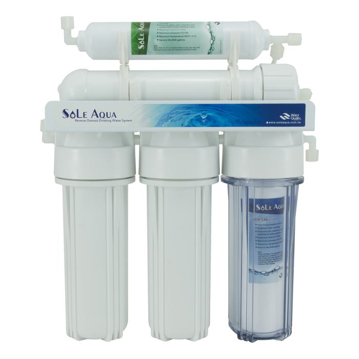
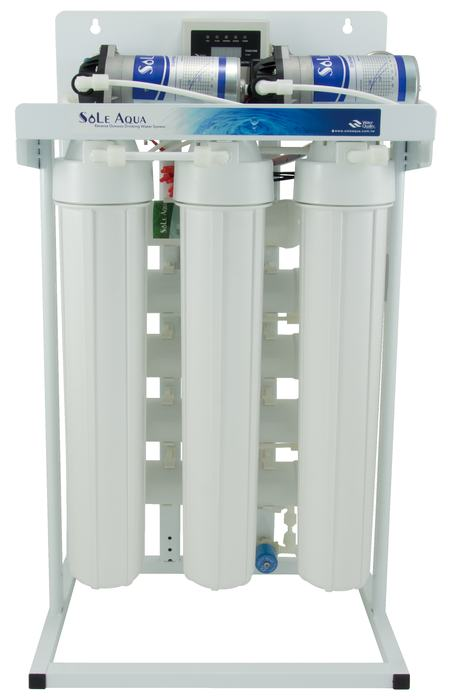
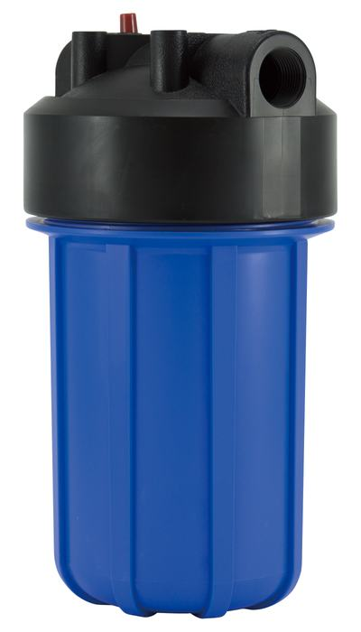
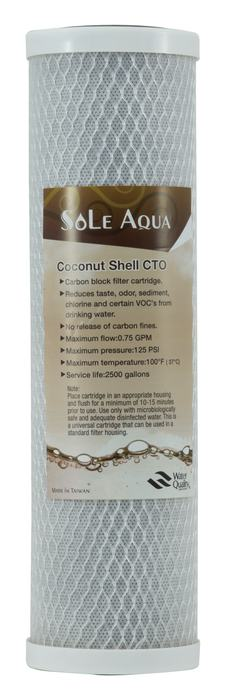
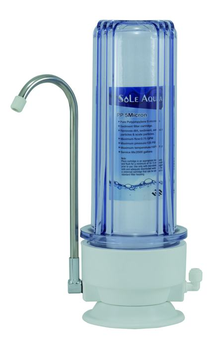

APPLICATIONS
Water purification
for every application.
See which CIAN HAN product categories are commonly used for residential, commercial, filtration, food service and hospitality water needs.
Residential
Clean drinking water for the home.
Reverse osmosis systems, under-sink filtration and point-of-use faucets for household drinking water.
Typical product categories
Ask about residential projects →
Commercial
Higher-capacity RO for professional use.
Commercial RO systems and supporting filtration for sites that need more output than a household unit.
Typical product categories
Ask about commercial projects →
Filtration
Build, replace and upgrade filter stages.
Housings and cartridges for multi-stage filtration, including sediment, carbon, specialty and RO membrane stages.
Typical product categories
Ask about filtration projects →
Food Service
Filtered water at the point of use.
Filtration products for kitchens, beverage preparation and drinking-water taps in food service settings.
Typical product categories
Ask about food service projects →
Hospitality
Water solutions for hotels and venues.
RO and filtration products supporting hotels, hospitality and other professional water use.
Typical product categories
Ask about hospitality projects →
AT A GLANCE
Categories by
application.
A starting point only. The right product depends on your water source, flow rate and installation, so please confirm details with our team.
| Product category | Residential | Commercial | Filtration | Food Service | Hospitality |
|---|---|---|---|---|---|
| Residential RO Systems | ● | – | – | – | – |
| Commercial RO Systems | – | ● | – | – | ● |
| Water Filter Systems | ● | – | ● | ● | ● |
| Filter Housings | – | ● | ● | – | ● |
| Filter Cartridges | ● | ● | ● | ● | – |
| Faucets | ● | – | – | ● | – |
NOT SURE WHICH FITS?
Tell us your
application.
Describe where the water will be used and what you need it to do. Our team can point you to suitable products or discuss an OEM / ODM configuration.
Send your requirements →